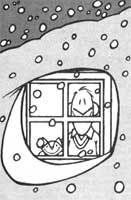

When the wintertime blues hit, don't say, "It's no use." Instead, learn . . .
Snow is nice, so they say . . . "they" being the skiers, sledders, snowshoers, and snowmen-makers of the world. But for folks who don't fit into such categories, the lovely white crystals can sometimes be a definite curse.
For one thing, snow has to be moved around a lot . . . in the course of clearing it out of driveways and off sidewalks, and shoveling it from steps and roofs. Furthermore, it destroys traction and causes accidents. So, as the drifts pile up, they bring some people down.
However, even a "snow scrooge" such as I can find a few uses for the cold, icy material. For one thing, a snowbank can serve as a "natural" freezer in case of such emergencies as a power blackout (which would likely have been caused by the snowstorm in the first place).
And, if you have a lot of snow (we've recorded as much as 117 inches in one season in our area of Michigan), you can use a shovel and a little elbow grease to pile a foot-thick layer of insulation up against your house . . . in order to help keep the nest cozy even when you dial down. (Of course, when spring comes around, you might have to shovel some of that insulation away, or - better yet - interest the local children in the fine spring sport of throwing snow on sunny bare spots and betting on which pile melts first.)
Here's another practical use for that wintry blanket: Remember the garage floor you meant to sweep all summer and fall . . . and didn't? Is all that dirt now tracked through the house? Well, snow is a great sweeping compound. Just wait for a mild day . . . throw a few shovelfuls of snow on the cement . . . and push the flakes out, right along with all the crud.
|
 |
|
|